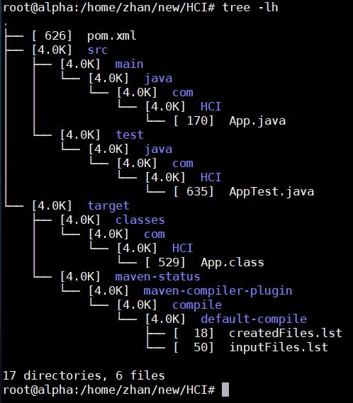
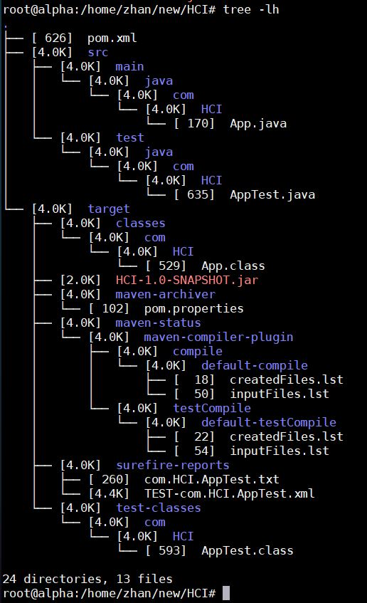

# Ubuntu18.04 安装 IntelliJ idea
https://blog.csdn.net/weixx3/article/details/81136822
# 手动下载 jar 包并通过 mvn 安装到 Linux 或 windows 环境，供项目引用
https://repo1.maven.org/maven2/ 或者https://mvnrepository.com/
如在 pom.xml 添加依赖但是下载不下来
| <dependency> |
| <groupId>org.apache.thrift</groupId> |
| <artifactId>libthrift</artifactId> |
| <version>0.10.0</version> |
| </dependency> |
浏览器连接 https://repo1.maven.org/maven2/org/apache/thrift/libthrift/ 查看指定版本如 0.10.0, 点击进去下载 libthrift-0.10.0.jar
执行如下命令
| cd /home/ai/IdeaProjects/microservice/user-thrift-service |
| mvn install:install-file -Dfile=/usr/maven/maven_repository/org/apache/thrift/libthrift/libthrift-0.10.0.jar -DgroupId=org.apache.thrift -DartifactId=libthrift -Dversion=0.10.0 -Dpackaging=jar |
Maven 安装 JAR 包的命令是
| mvn install:install-file -Dfile=本地jar包的位置 -DgroupId=上面的groupId -DartifactId=上面的artifactId -Dversion=上面的version -Dpackaging=jar |
到 maven 设置的 repository 里查看
| $ cd /usr/maven/maven_repository/org/apache/thrift/libthrift |
| $ ls -alh |
| drwxr-xr-x 2 root root 4.0K 4月 9 10:41 0.10.0 |
| -rw-r--r-- 1 root root 308 4月 9 10:41 maven-metadata-local.xml |
# Linux 命令行方式：搭建，编译，测试，运行 calss 文件，打包，运行 jar 包，安装，部署， 清理 命令.
- 搭建
| mvn archetype:generate -DinteractiveMode=false -DgroupId=com.HCI -DartifactId=HCI -Dpackage=com.HCI |
查看
| <project xmlns="http://maven.apache.org/POM/4.0.0" xmlns:xsi="http://www.w3.org/2001/XMLSchema-instance" |
| xsi:schemaLocation="http://maven.apache.org/POM/4.0.0 http://maven.apache.org/maven-v4_0_0.xsd"> |
| <modelVersion>4.0.0</modelVersion> |
| <groupId>com.HCI</groupId> |
| <artifactId>HCI</artifactId> |
| <packaging>jar</packaging> |
| <version>1.0-SNAPSHOT</version> |
| <name>HCI</name> |
| <url>http://maven.apache.org</url> |
| <dependencies> |
| <dependency> |
| <groupId>junit</groupId> |
| <artifactId>junit</artifactId> |
| <version>3.8.1</version> |
| <scope>test</scope> |
| </dependency> |
| </dependencies> |
| </project> |
- 编译源代码
| mvn compile |
| mvn compile -Dcheckstyle.skip=true： 不需要进行代码style检查进行编译 |
Reference Link: https://checkstyle.org/cmdline.html

- 测试编译过的代码
- 执行编译过的代码
| // App换成自己的执行入口函数(文件)名称. |
| mvn exec:java -Dexec.mainClass="com.HCI.App" |
- 生成构件包（一般为 jar 包或 war 包）

- 拷贝 jar 包
| java -cp target/HCI-1.0-SNAPSHOT.jar com.HCI.App |
- 将构件包安装到本地仓库
| mvn install |
| mvn install -DskipTests： 跳过测试, 构建包到本地./target目录 |
| jar xf search-image-by-image-rest-0.0.1-SNAPSHOT.jar: 解压jar包, 查看jar包内容 |
- 将构件包部署到远程仓库
- 清空输出目录（即 target 目录）
创建 Maven 项目如 HCI 后，执行 Maven 其它命令需要注意的是：必须在 Maven 项目的根目录处执行，也就是当前目录下一定存在一个名为 pom.xml 的文件
如进入 /home/ai/IdeaProjects/microservice/user-thrift-service 目录再执行 mvn install...... 命令
# 遇到的问题
# from thrift.Thrift import TType, TMessageType, TFrozenDict, TException, TApplicationException ImportError: cannot import name TFrozenDict
解决方法是：某些包没有关联上，装包时加上 [hive] 后缀
| $ pip install pyhive[hive] |